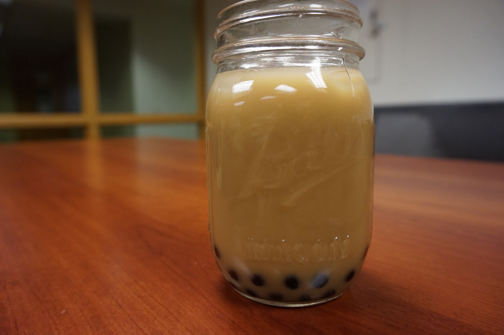

<!--
  Generated template for the Recipes page.

  See http://ionicframework.com/docs/v2/components/#navigation for more info on
  Ionic pages and navigation.
-->


<ion-header>

  <ion-navbar>
    <ion-title>Recipes</ion-title>
  </ion-navbar>

</ion-header>


<ion-content padding>
  <button ion-button full (click)="GoToDetail()"> Bubble Tea </button>
</ion-content>
